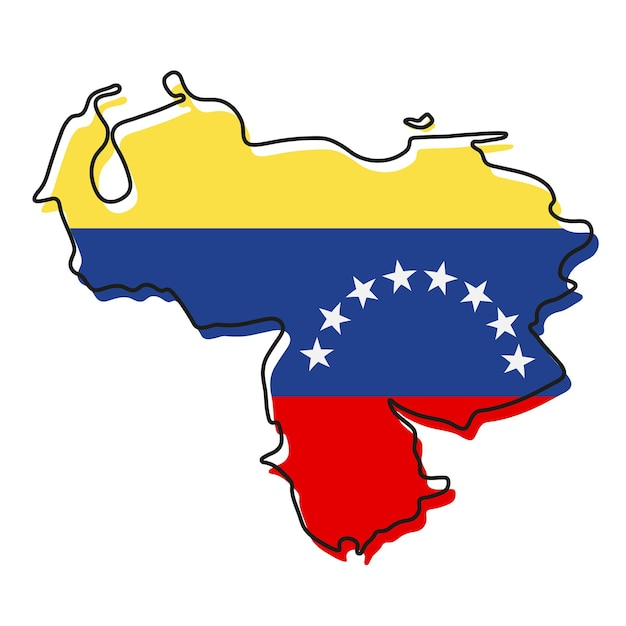

Viagem ao Brasil
Publicado: 22/03/2024
O Brasil é o país mais populoso da América do Sul e o sexto mais populoso do mundo, o país conta com 213.317.639 habitantes. O Brasil é um país de diversidade, alegre, com reunião de pessoas, de festa, por causa do futebol e do Carnaval e onde as pessoas vivem bem.
Fizemos essa viagem em Julho de 2021 onde estou a 2 anos, com experiência de uma nova cultura, culinária, paisagens visnumbrantes e principalmente muita alegria e festas!
Leia mais..
Venezuela
Publicado: 22/03/2024

É um país com grande biodiversidade e rico em recursos naturais, conhecida principalmente por suas reservas de petróleo e suas lindas praias, e paisagens naturais. É um pais cheio de novas culturas e lugares maravilhosos.
A riqueza da Venezuela é a extração de petróleo e de gás natural é o principal motor da economia venezuelana. Além disso, o país destaca-se na produção de minerais como ferro, bauxita, diamante e ouro.
Leia mais..
20 de Junho - Dia da Amizade
Publicado: 10/04/2024

O Dia do Amigo é oficialmente comemorado em 20 de julho, e o principal objetivo desta data é celebrar a amizade, um sentimento de fraternidade mútua partilhado entre as pessoas. Normalmente, durante o Dia do Amigo é comum a troca de presentes e declarações de amizade.
Leia mais..